UnicodePlots
Examples for backend: unicodeplots
Initialize
using Plots unicodeplots()
Lines
A simple line plot of the columns.
plot(fakedata(50,5),w=3)
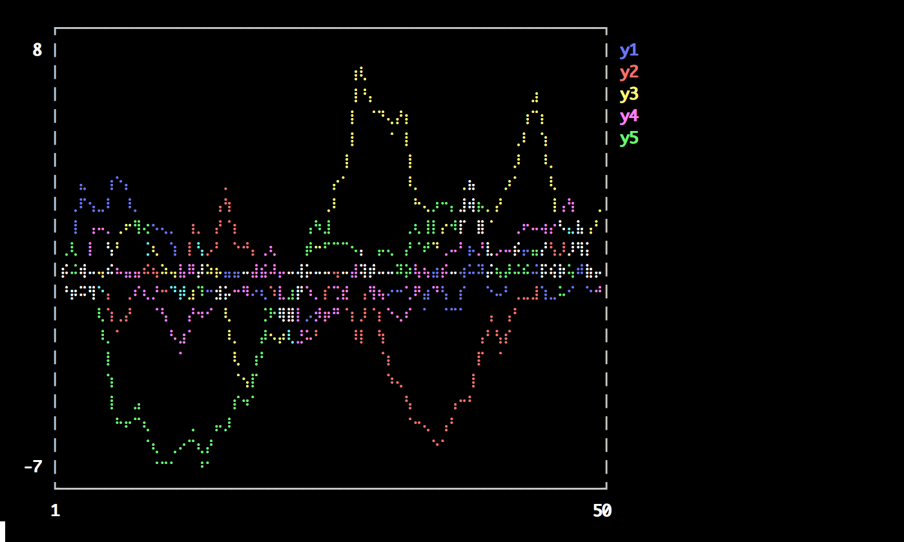
Parametric plots
Plot function pair (x(u), y(u)).
plot(sin,(x->begin # /Users/tom/.julia/v0.4/Plots/docs/example_generation.jl, line 50: sin(2x) end),0,2π,line=4,leg=false,fill=(0,:orange))

Colors
Access predefined palettes (or build your own with the colorscheme method). Line/marker colors are auto-generated from the plot's palette, unless overridden. Set the z argument to turn on series gradients.
y = rand(100) plot(0:10:100,rand(11,4),lab="lines",w=3,palette=:grays,fill=(0.5,:auto)) scatter!(y,z=abs(y - 0.5),m=(10,:heat),lab="grad")
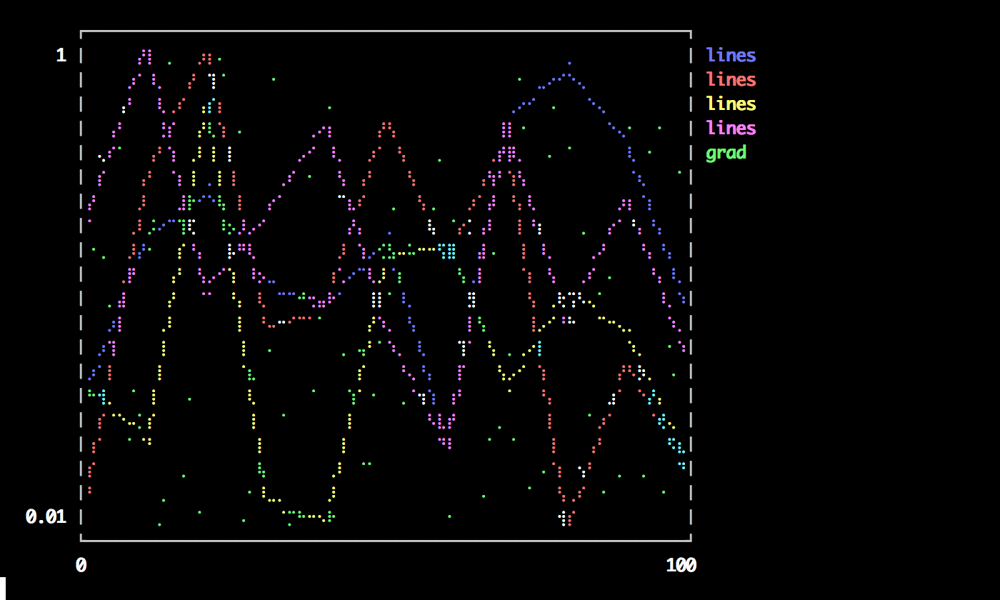
Global
Change the guides/background/limits/ticks. Convenience args xaxis and yaxis allow you to pass a tuple or value which will be mapped to the relevant args automatically. The xaxis below will be replaced with xlabel and xlims args automatically during the preprocessing step. You can also use shorthand functions: title!, xaxis!, yaxis!, xlabel!, ylabel!, xlims!, ylims!, xticks!, yticks!
plot(rand(20,3),xaxis=("XLABEL",(-5,30),0:2:20,:flip),background_color=RGB(0.2,0.2,0.2),leg=false) title!("TITLE") yaxis!("YLABEL",:log10)
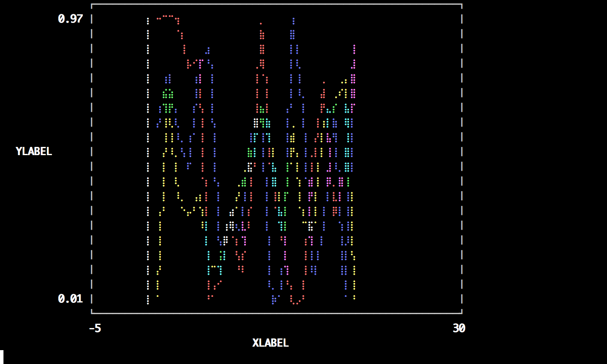
Two-axis
Use the axis arguments.
Note: Currently only supported with Qwt and PyPlot
plot(Vector[randn(100),randn(100) * 100],axis=[:l :r],ylabel="LEFT",yrightlabel="RIGHT")
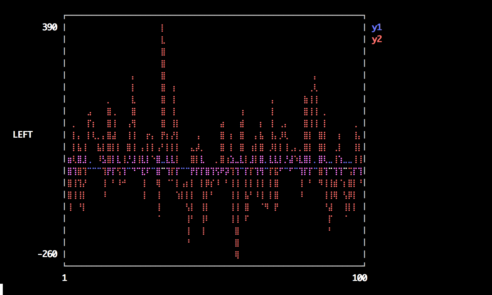
Arguments
Plot multiple series with different numbers of points. Mix arguments that apply to all series (marker/markersize) with arguments unique to each series (colors). Special arguments line, marker, and fill will automatically figure out what arguments to set (for example, we are setting the linestyle, linewidth, and color arguments with line.) Note that we pass a matrix of colors, and this applies the colors to each series.
plot(Vector[rand(10),rand(20)],marker=(:circle,8),line=(:dot,3,[:black :orange]))
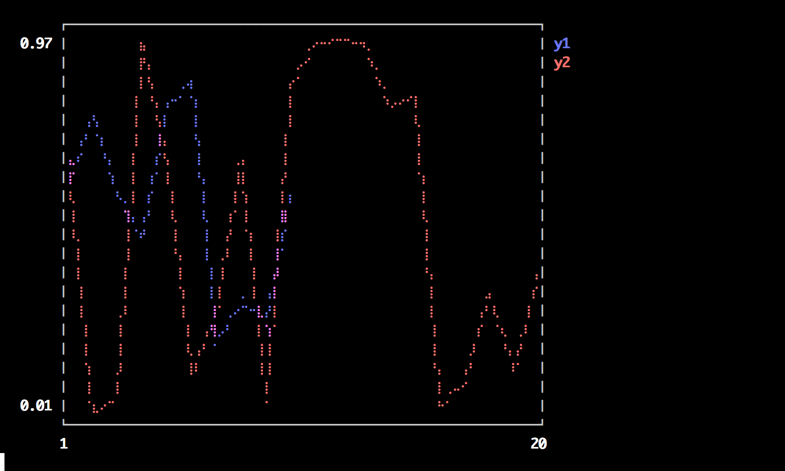
Build plot in pieces
Start with a base plot...
plot(rand(100) / 3,reg=true,fill=(0,:green))
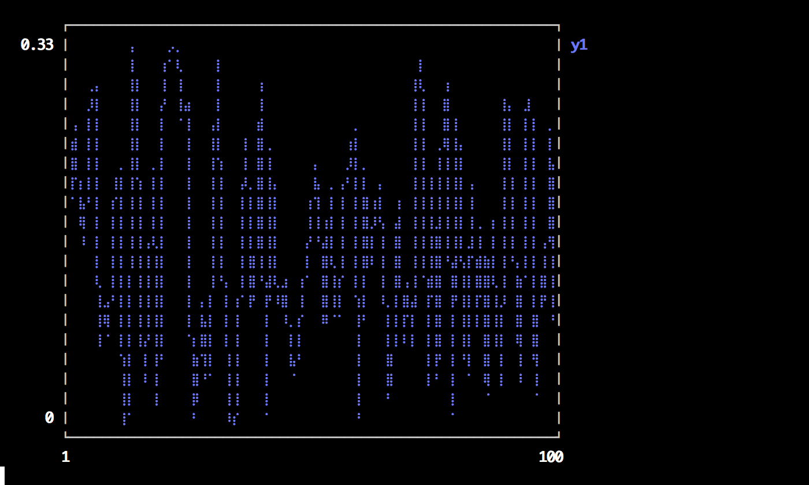
and add to it later.
scatter!(rand(100),markersize=6,c=:orange)
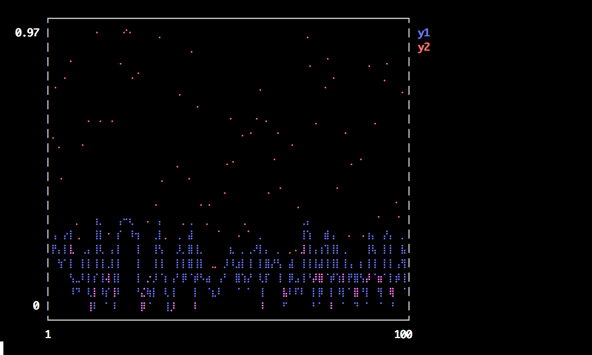
Line types
types = intersect(supported_types(),[:line,:path,:steppre,:steppost,:sticks,:scatter])' n = length(types) x = Vector[sort(rand(20)) for i = 1:n] y = rand(20,n) plot(x,y,line=(types,3),lab=map(string,types),ms=15)
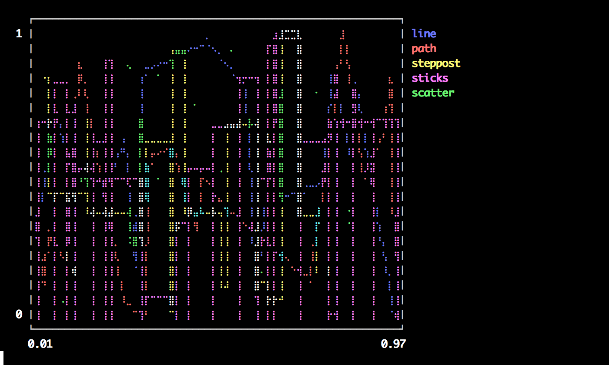
Line styles
styles = setdiff(supported_styles(),[:auto])' plot(cumsum(randn(20,length(styles)),1),style=:auto,label=map(string,styles),w=5)
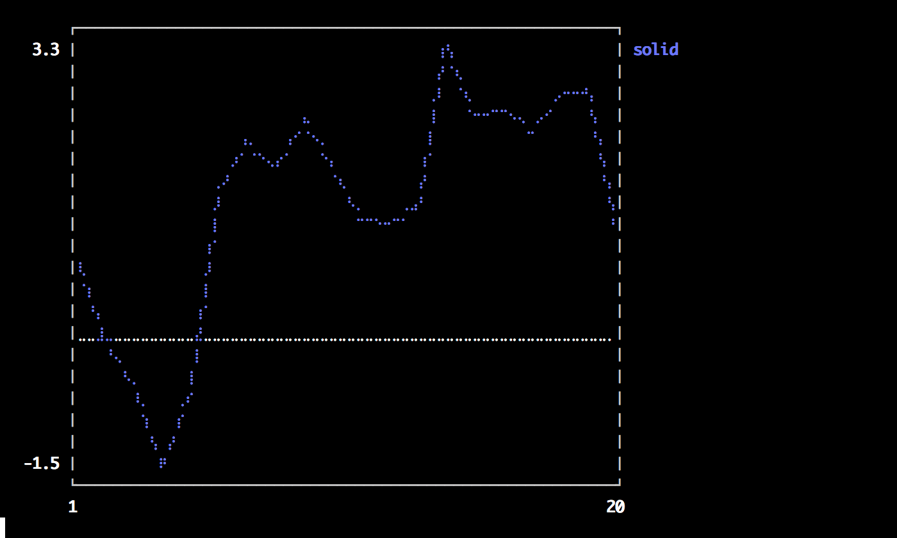
Marker types
markers = setdiff(supported_markers(),[:none,:auto,Shape])' n = length(markers) x = (linspace(0,10,n + 2))[2:end - 1] y = repmat(reverse(x)',n,1) scatter(x,y,m=(8,:auto),lab=map(string,markers),bg=:linen)
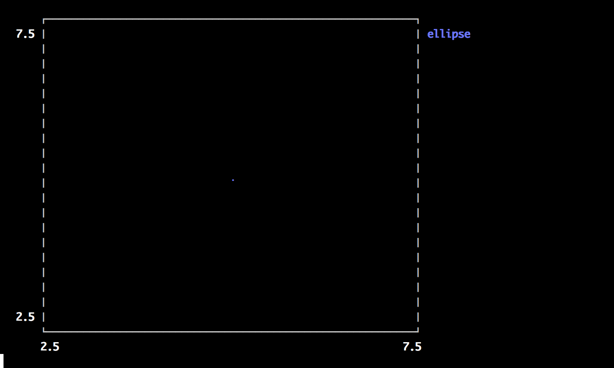
Bar
x is the midpoint of the bar. (todo: allow passing of edges instead of midpoints)
bar(randn(999))
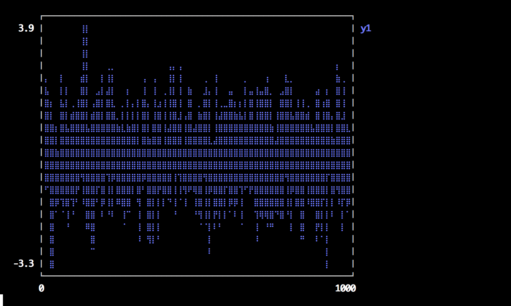
Histogram
histogram(randn(1000),nbins=50)
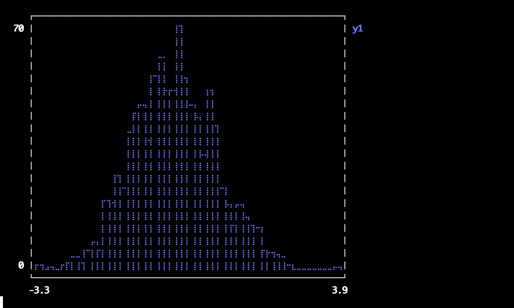
Subplots
subplot and subplot! are distinct commands which create many plots and add series to them in a circular fashion.
You can define the layout with keyword params... either set the number of plots n (and optionally number of rows nr or
number of columns nc), or you can set the layout directly with layout.
subplot(randn(100,5),layout=[1,1,3],t=[:line :hist :scatter :step :bar],nbins=10,leg=false)
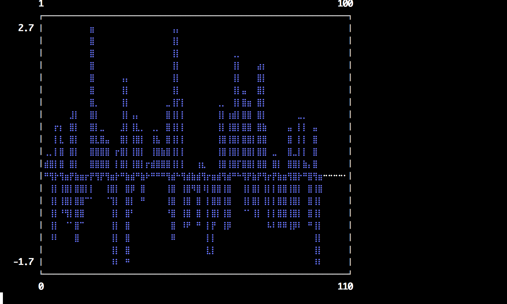
Adding to subplots
Note here the automatic grid layout, as well as the order in which new series are added to the plots.
subplot(fakedata(100,10),n=4,palette=[:grays :blues :heat :lightrainbow],bg=[:orange :pink :darkblue :black])
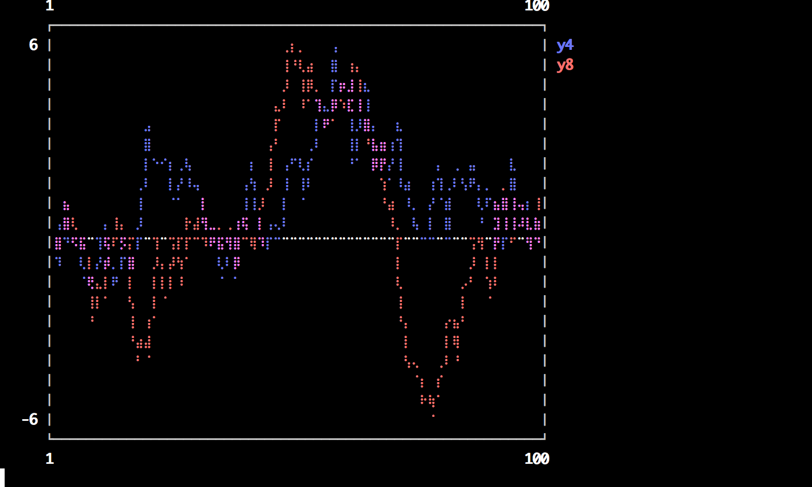
subplot!(fakedata(100,10))
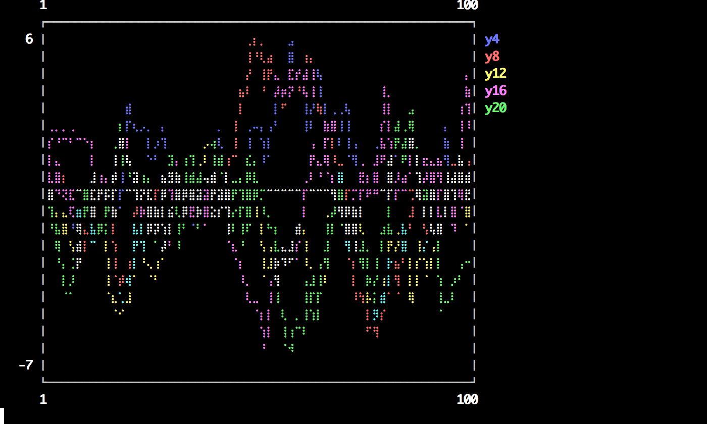
Custom Markers
A Plots.Shape is a light wrapper around vertices of a polygon. For supported backends, pass arbitrary polygons as the marker shapes. Note: The center is (0,0) and the size is expected to be rougly the area of the unit circle.
verts = [(-1.0,1.0),(-1.28,0.6),(-0.2,-1.4),(0.2,-1.4),(1.28,0.6),(1.0,1.0),(-1.0,1.0),(-0.2,-0.6),(0.0,-0.2),(-0.4,0.6),(1.28,0.6),(0.2,-1.4),(-0.2,-1.4),(0.6,0.2),(-0.2,0.2),(0.0,-0.2),(0.2,0.2),(-0.2,-0.6)] plot(0.1:0.2:0.9,0.7 * rand(5) + 0.15,l=(3,:dash,:lightblue),m=(Shape(verts),30,RGBA(0,0,0,0.2)),bg=:pink,fg=:darkblue,xlim=(0,1),ylim=(0,1),leg=false)
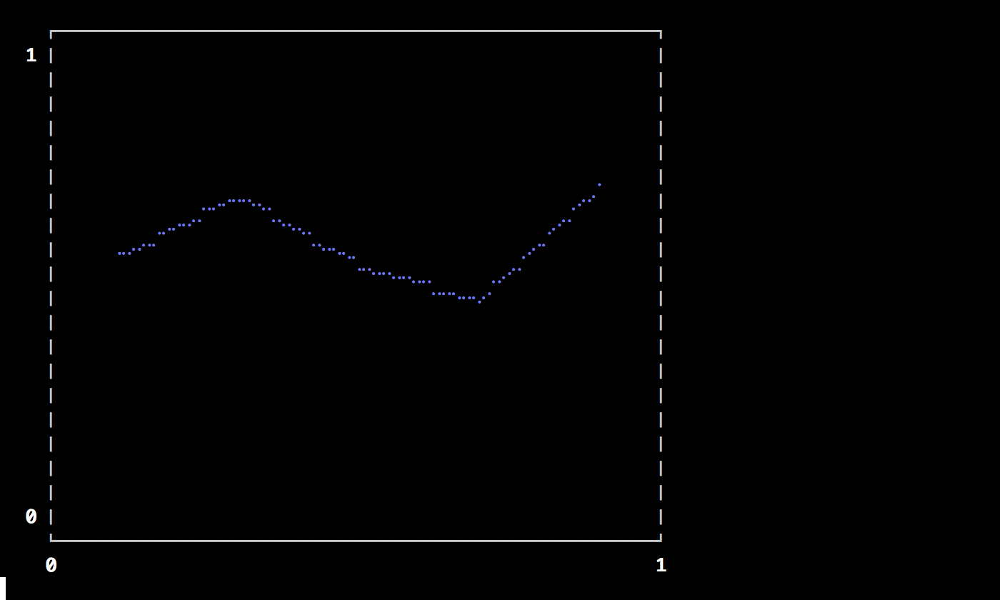
- Supported arguments:
group,label,legend,linestyle,linetype,markershape,nbins,show,size,title,windowtitle,x,xlabel,xlims,y,ylabel,ylims - Supported values for axis:
:auto,:left - Supported values for linetype:
:bar,:heatmap,:hexbin,:hist,:hline,:line,:none,:path,:scatter,:steppost,:sticks,:vline - Supported values for linestyle:
:auto,:solid - Supported values for marker:
:auto,:circle,:none - Is
subplot/subplot!supported? Yes
(Automatically generated: 2015-10-18T00:07:46)